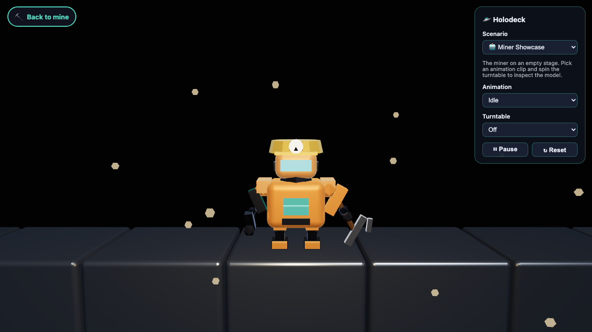
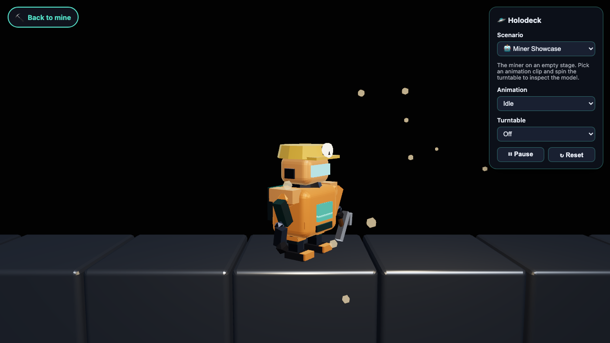
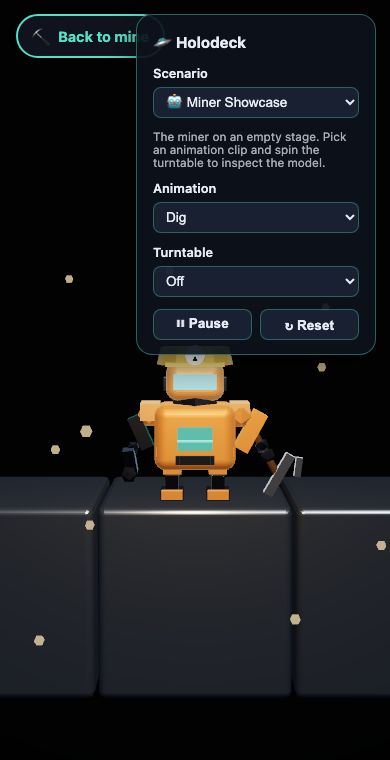
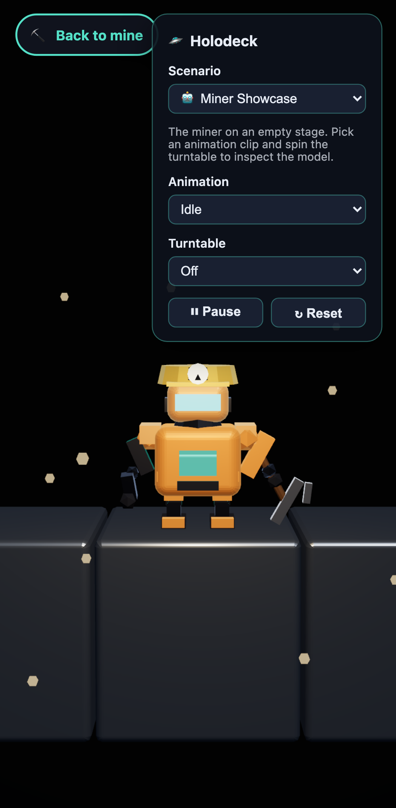
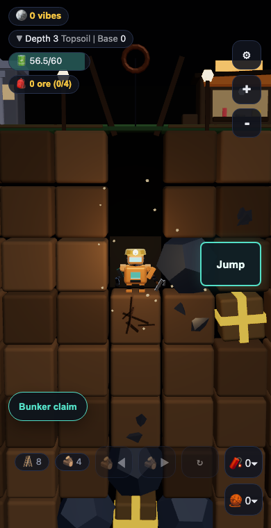

data-renderer="webgl2-forced": TSL materials compiled to GLSL, zero console errors, identical render.
Character pipeline slices 1 and 2 (PR #83 and the model v2 PR). Captures produced by scripts/capture-miner-showcase.mjs and a mine-context driver against a local production build, 2026-07-02. No desktop or browser-session captures; every image is a scripted canvas screenshot.




data-renderer="webgl2-forced": TSL materials compiled to GLSL, zero console errors, identical render.